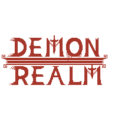
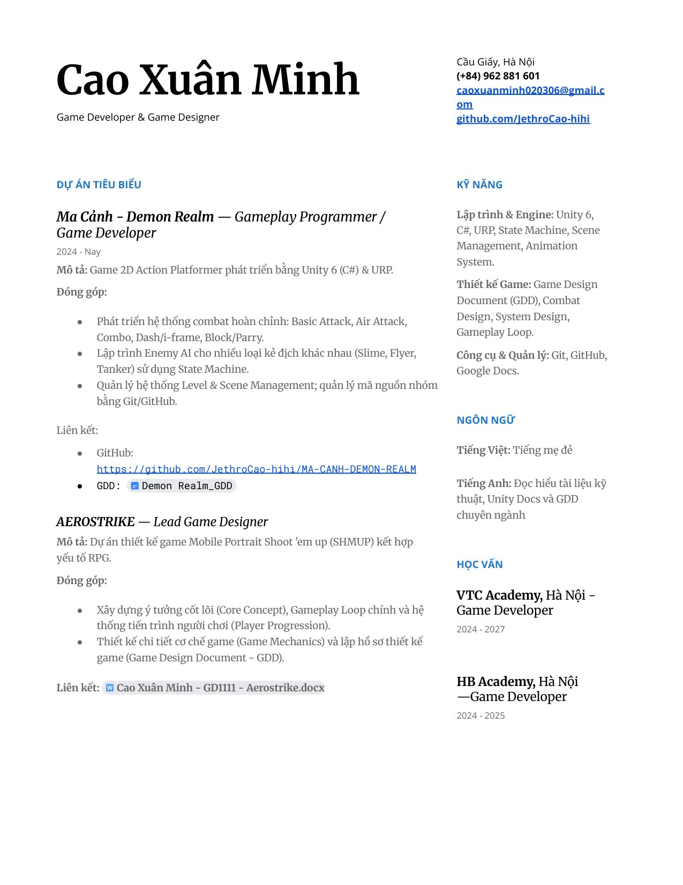

Aerostrike
Lead game designer
Game bắn máy bay màn hình dọc cho điện thoại, thêm yếu tố RPG, theo hướng free-to-play. Tôi dựng ý tưởng cốt lõi, vòng chơi chính, hệ thống lên cấp của người chơi và viết chi tiết từng cơ chế trong GDD.
Gameplay programmer · Unity, C#
Tôi viết gameplay cho game Unity: điều khiển nhân vật, combat và AI quái. Hiện học Game Programming tại VTC Academy (2024–2027) và đang tìm chỗ thực tập hoặc vị trí junior gameplay programmer.

Phần tôi phụ trách là những thứ người chơi bấm vào: combo ba đòn, đánh trên không, lướt, đỡ và phản đòn. Tôi cũng viết AI cho ba loại quái bằng state machine, lo quản lý level, chuyển scene, và giữ repo chung của nhóm trên GitHub.
Mở repo Ma Cảnh trên GitHubNhân vật, quái, khu rừng và tốc độ animation lấy từ repo. Sát thương, cooldown, lướt, phản đòn, máu, thời gian bất tử sau khi trúng đòn và tầm đánh của quái dùng giá trị mặc định trong các script của game. Phần tôi tự thêm cho bản web: trọng lực và vị trí điểm chém (hai giá trị này nằm trong scene Unity), kích thước hitbox, và việc quái hồi sinh sau 2,5 s.
Bàn phím như trong game: A D hoặc mũi tên để đi, Space nhảy, J đánh (bấm liên tiếp ra combo 3 đòn), K hoặc Shift lướt. Chạm nhanh L (dưới 0,18 s) để phản đòn, giữ L để đỡ. Esc tạm dừng. Bấm vào khung chơi trước để phím có tác dụng.
Dùng các nút dưới khung chơi. Chạm nhanh nút Đỡ để phản đòn, giữ nút Đỡ để đỡ đòn.
Chạm nhanh L (thả ra trước 0,18 s) thì PlayerMovement gọi
RequestParry(). Hàm dưới đây mở cửa sổ phản đòn 0,25 s rồi tự đóng bằng
Invoke. Giữ L quá 0,18 s thì thành đỡ đòn. Trong thời gian đó
PlayerHealth không trừ máu.
private void TryParry()
{
if (Time.time < lastParryTime + parryCooldown) return;
lastParryTime = Time.time;
if (hasParryTrigger)
{
anim.ResetTrigger(parryTriggerHash);
anim.SetTrigger(parryTriggerHash);
if (SoundManager.Instance != null)
SoundManager.Instance.PlayPlayerSfx("Parry");
}
// Có thể dùng bool để transition nếu animator cần
isParrying = true;
if (hasIsParryingParam)
anim.SetBool(isParryingHash, true);
CancelInvoke(nameof(EndParryWindow));
Invoke(nameof(EndParryWindow), parryWindow);
}| Quái | Hành vi | Chỉ số mặc định |
|---|---|---|
| Slime | Tuần tra qua lại. Thấy người chơi trong 6 đơn vị thì đuổi theo, chạm vào là trừ máu. | Va chạm: 5 máu, 0,75 s một lần Tầm đánh 1,2 |
| Bug | Bay lơ lửng cách mặt đất 3 đơn vị, bám theo người chơi rồi đánh trúng cả một vùng. | 10 máu mỗi đòn, bán kính 0,8 Hồi đòn 1,2 s |
| Shield | Lao tới đẩy văng người chơi bằng khiên, sau đó chém. Đỡ đúng lúc thì không mất máu. | Đẩy: 8 máu, lực văng 10 Chém: 12 máu |
| Boss | Mở màn bằng cutscene. Chọn ngẫu nhiên giữa bắn đạn và đập tay tạo sóng. Boss hết máu thì chiếu outro và credits. | 300 máu Nghỉ 3 s giữa hai đòn |
Số trong bảng là giá trị mặc định trong script, scene có thể chỉnh lại trong Inspector.
Ngoài gameplay, repo có hai tool editor để dựng cutscene và bộ test EditMode cho
CutsceneStateStore, phần nhớ cutscene nào người chơi đã xem.
Ba repo dưới đây chưa có ảnh chụp, nên tôi để link thẳng tới file code đáng đọc nhất của từng cái.
3D, Unity 6.3. Đồ án học kỳ ở VTC.
Năm đợt quái, đợt cuối là boss UFO. Kéo một tháp thả lên tháp cùng loại, cùng cấp để ghép thành tháp cấp cao hơn. Quái biết bắn trả nên phải canh máu tháp, bán tháp hỏng lấy lại 50% tiền. Chỉ số tháp và quái nằm trong ScriptableObject để cân bằng mà không sửa code, quái được lấy ra từ object pool.
FPS, Unity. Đang làm.
Prototype bắn súng góc nhìn thứ nhất chơi qua mạng. Đã có di chuyển, súng, máu
người chơi, và RoomManager kết nối Photon PUN để vào phòng rồi
sinh nhân vật ở điểm xuất phát.
2D, Unity.
Mê cung tạo ngẫu nhiên, càng chơi càng khó, có điểm và bảng xếp hạng.
Game.cs xử lý cả thao tác vuốt để chơi trên màn hình cảm ứng.
Trước khi code, tôi viết GDD để chốt core loop và các cơ chế. Sau đó dựng prototype trong Unity rồi chỉnh tiếp bằng cách chơi thử và sửa code. Hai bản GDD dưới đây là concept, chưa thành game, và chưa đăng công khai.
Lead game designer
Game bắn máy bay màn hình dọc cho điện thoại, thêm yếu tố RPG, theo hướng free-to-play. Tôi dựng ý tưởng cốt lõi, vòng chơi chính, hệ thống lên cấp của người chơi và viết chi tiết từng cơ chế trong GDD.
Game design
Concept giải đố, phiêu lưu và sinh tồn: một đứa trẻ đi khám phá mê cung không có điểm cuối. Hướng tới cả điện thoại và PC.
Dự án, kỹ năng, học vấn và liên hệ trên một trang PDF. Xem ngay ở đây, hoặc tải về để lưu vào hồ sơ ứng viên.

Tôi ở Cầu Giấy, Hà Nội, đang tìm chỗ thực tập hoặc vị trí junior làm Unity.
luonminh0203@gmail.comEmail ghi trong CV: caoxuanminh020306@gmail.com